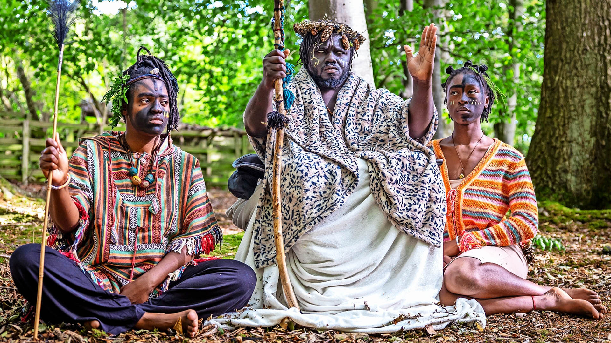

The Kingdom of Kubala—A Royal Fantasy in the Scottish Woods
The Royal Trio
Leading the group is King Atehene (formerly opera singer Kofi Offeh) and his royal consort Queen Nandi (Jean Gasho), accompanied by a young American woman, Kaura Taylor, now known as Asnat, the “handmaiden.” Their narrative welds biblical prophecy, Afro-Scottish heritage, and mysticism into a unique tapestry of belief and ritual.
Legend Reimagined
According to Kubala’s lore, their ancestors—depicted as black Jacobites—were deported by Queen Elizabeth I four centuries ago. They claim Scotland as their rightful ancestral homeland, asserting descent from the Messiah, and view this return as a pilgrimage to fulfill prophecy.
Surviving off the land, the group bathes in clear streams, practices communal rituals, wears leaves and handmade attire, and rejects local governmental authority in favor of the laws of their god, Yahowah.
Their camp, on council-owned land, faced eviction. The group responded by resisting local authority, insisting only divine rulership mattered. Tensions escalated when vigilantes allegedly burned their tents, raising social and safety concerns among locals.
Some residents initially showed curiosity, others offered help—until rising unease prompted authorities to act.
A Daughter Dissolves into Myth
Kaura Taylor, a 21-year-old single mother from Texas, reported missing by her family. She reemerged within this woodland tribe, now calling herself Asnat, claiming she escaped abuse and found solace in Kubala’s natural, spiritual life. But her family worries she may have been manipulated, especially after her child was taken into UK care.
Scottish authorities, including the Borders Council and Police Scotland, have offered housing and support but face a complex challenge: while Asnat is an adult, her welfare remains a concern. The camp has since been removed, but the group's story continues to spark local and online debate about belief, autonomy, and intervention.
From Cape Town to Washington: The Fight for South Africa’s First Breakaway Province
Who’s Behind the Push?
The idea is championed by groups like the Cape Independence Party (CAPEXIT) and the Cape Independence Advocacy Group (CIAG). They’ve even spun off a new Referendum Party, whose sole mission is to pressure leaders into calling a vote on the issue.
Yet despite the noise, the road is blocked. South Africa’s Constitution allows only the President or the Provincial Premier to call a referendum—and neither the ANC (national ruling party) nor the DA (which runs the Western Cape) have shown interest.
Both parties dismiss Cape Independence as “a myth” and “self-serving.” Critics go further, calling it racially divisive and a distraction from real reform.
Taking the Fight Abroad
In March 2025, the Cape Independence Advocacy Group even tried to lobby Washington, D.C., hoping to win international sympathy. President Cyril Ramaphosa blasted the effort, warning that South Africa would never allow its territory to fragment along racial or political lines.
Can It Really Happen?
Legally, Cape Independence faces monumental hurdles. Even if a referendum passed, secession would likely require constitutional amendments, national consent, and international recognition—none of which seem forthcoming.
But the fact that the idea is gaining traction speaks volumes about the frustration many citizens feel with South Africa’s current leadership. For some, CapeXit represents not just independence, but hope for better governance, safer streets, and economic revival.
The Dream vs. Reality
For now, Cape Town remains firmly part of South Africa. But the CapeXit dream is alive—and growing louder. Whether it’s a serious political project or just a protest against the status quo, it forces the nation to reckon with a deeper truth: unity only works when people feel it benefits them.
From Ghana to the FBI: The Fall of ‘The Enterprise
Love, Lies, and Millions
The scheme was simple but devastating:
● A lonely widow in Texas receives a message from a charming “soldier stationed overseas.”
● A business executive in Chicago is tricked into wiring funds to a “partner” he never met.
Behind these facades were not soldiers or partners—but men with laptops in Ghana, spinning lies that drained bank accounts and broke hearts.
Prosecutors say the accused—Isaac Oduro Boateng (Kofi Boat),Inusah Ahmed (Pascal),Derrick van Yeboah (Van), and the elusive Patrick Kwame Asare (Borgar)—were high-ranking operators of a cybercrime syndicate called “The Enterprise.”
The Fall
On August 7, 2025, after months of surveillance and negotiations, Ghanaian authorities working with the FBI made their move.
● Boateng, Ahmed, and Yeboah were arrested, hustled through immigration, and flown to the U.S. under heavy guard.
● Asare slipped through the cracks. His name now sits on America’s most-wanted cyber list.
The men were marched into a federal courtroom in New York—no longer digital ghosts, but defendants facing wire fraud, money laundering, and conspiracy charges that could keep them behind bars for decades.
In Ghana, the arrests lit up headlines. Some saw justice; others saw the country’s name dragged once again into the mud of internet fraud culture, known locally as sakawa. Yet the cooperation between Ghana’s EOCO, INTERPOL, and Cyber Security Authority and the FBI showed another side: a nation fighting to clean up its image, even if it means extraditing its own citizens.
The Carpenter’s Son: Nicolas Cage Reimagines the Dark Childhood of Jesus in a Controversial New Film
A Holy Family in Hiding
The film follows Joseph, Mary, and their young son—known only as The Boy—as they flee to Roman-occupied Egypt. Life in exile seems fragile enough, but when The Boy befriends another strange child, things take a darker turn. Supernatural powers, whispered prophecies, and violent doubts creep in, unsettling both family and community.
A Star-Studded Cast
●Nicolas Cage as Joseph, the weary carpenter carrying divine secrets.
●FKA Twigs as Mary, the mother torn between awe and fear of her son.
●Noah Jupe as The Boy, a version of Jesus whose miracles may not always be merciful.
Roots in Forbidden Texts
The film takes inspiration from the Infancy Gospel of Thomas—an apocryphal text long excluded from the Bible. Unlike the gentle shepherd of Sunday school, this story portrays the young Jesus as a child both divine and dangerous, capable of miracles that blur the line between blessing and curse.
Why It’s Generating Buzz
Part faith, part folklore, part nightmare—The Carpenter’s Son sits in the same unsettling space as The Witch and The Passion of the Christ. Its teaser, released in August 2025, already has horror fans and theologians debating in equal measure.
Release Date
The film is slated for release in Fall 2025, and early reactions suggest it could become one of the most controversial religious horror films of the decade.